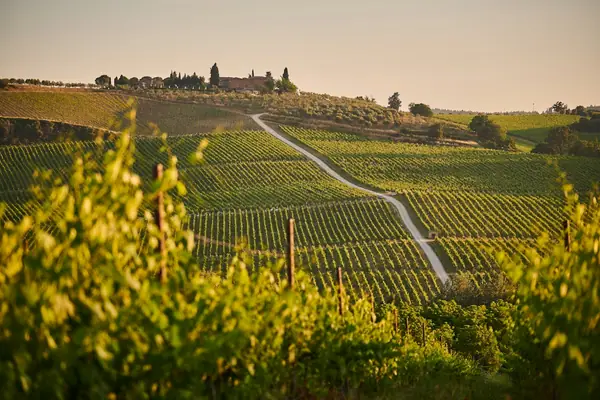

Home › Wine regions › Tuscany
Tuscany wine region

Photo: Johny Goerend on Unsplash
Chianti, Brunello and Super Tuscans.
Vines grow in all 20 regions. Wines are classed DOCG, DOC and IGT.
Notable producers in Tuscany
- Antinori
- Biondi-Santi
- Tenuta San Guido
- Ornellaia
- Fontodi
Official appellations
| Appellation | Status | Style | Grapes |
|---|---|---|---|
| Brunello di Montalcino (1980) 100% Sangiovese from the hill town of Montalcino. Released on 1 January of the fifth year after harvest (the sixth for Riserva), with at least two years in oak. | DOCG | Red | Sangiovese |
| Chianti Classico (1984) The historic heart of Chianti between Florence and Siena, marked by the black rooster seal. At least 80% Sangiovese; Gran Selezione is the top tier. | DOCG | Red | Sangiovese |
| Carmignano (1990) A small hill zone on Montalbano west of Florence, where Sangiovese (at least 50%) is blended with 10–20% Cabernet Sauvignon or Franc, plus Canaiolo and others. Riserva ages at least three years; the same area also makes Barco Reale di Carmignano DOC and Vin Santo. Good to know: Cosimo III de' Medici protected Carmignano's boundaries in a 1716 edict, and Cabernet ('uva francesca') was grown here long before the Super Tuscans. | DOCG | Red | Sangiovese, Cabernet Sauvignon, Cabernet Franc |
| Chianti (1984) Tuscany's largest DOCG spreads over the provinces of Florence, Siena, Arezzo, Pisa, Pistoia and Prato, mostly on clay and limestone hills, with at least 70% Sangiovese plus Canaiolo, Colorino or international varieties. Riserva ages at least two years, and seven sub-zones (Rùfina, Colli Fiorentini, Colli Senesi, Colli Aretini, Colline Pisane, Montalbano and Montespertoli) may appear on the label. Good to know: Chianti Classico, the original heartland between Florence and Siena, is a separate DOCG. | DOCG | Red | Sangiovese, Cabernet Sauvignon, Merlot |
| Elba Aleatico Passito (2011) Sweet red from the island of Elba off the Tuscan coast, grown on granite, schist and iron-rich soils in a warm, windy maritime climate. Made from 100% Aleatico, dried for at least 10 days to reach high sugar levels, then released no earlier than 1 March after the harvest. Good to know: also labelled Aleatico Passito dell'Elba; legend links it to Napoleon's exile on the island, and it is a classic match for dark chocolate and crostata. | DOCG | Sweet | Aleatico |
| Montecucco Sangiovese (2011) Sangiovese from the slopes of Monte Amiata in the province of Grosseto, between Brunello country and the Maremma, on volcanic-influenced clays, sandstone and limestone. At least 90% Sangiovese, aged at least 17 months with 12 in barrel; the Riserva needs 34 months with 24 in barrel and 6 in bottle. Good to know: one of Italy's highest shares of organic vineyards; the blended reds and whites of the zone stay under the separate Montecucco DOC. | DOCG | Red | Sangiovese |
| Morellino di Scansano (2007) From the warm hills around Scansano in the Maremma of southern Tuscany, Sangiovese (locally Morellino, at least 85%) ripens fully into a juicy, generous red. Riserva needs two years' ageing including one in wood, and a new Superiore tier (2026 decree) adds lower yields, 13% alcohol and release no earlier than 1 January of the second year after harvest. Good to know: sea breezes from the Tyrrhenian help keep the fruit fresh despite the heat. | DOCG | Red | Sangiovese |
| Suvereto (2011) Reds from the hills around the medieval town of Suvereto in the Val di Cornia, inland from Piombino on the Tuscan coast, on stony clay and limestone soils with a warm, Mediterranean climate. A Rosso blend of Cabernet Sauvignon, Cabernet Franc, Merlot, Sangiovese or Syrah plus single-variety versions, aged around 18 months; the Riserva needs about 30 months including 12 in barrel and 6 in bottle. Good to know: formerly a sub-zone of the Val di Cornia DOC, it became a DOCG in 2011. | DOCG | Red | Cabernet Sauvignon, Merlot, Sangiovese, Cabernet Franc, Syrah |
| Val di Cornia Rosso (2011) Sangiovese-based reds from the Val di Cornia on the Tuscan coast. | DOCG | Red | Sangiovese, Cabernet Sauvignon, Merlot |
| Vernaccia di San Gimignano (1993) Tuscany's white DOCG: crisp, almond-tinged Vernaccia from the towered hill town. | DOCG | White | Vernaccia |
| Vino Nobile di Montepulciano (1980) One of the four original DOCGs: Sangiovese (Prugnolo Gentile) from the town of Montepulciano. | DOCG | Red | Sangiovese |
| Ansonica Costa dell'Argentario Coastal Ansonica (Inzolia) whites from the Argentario promontory. | DOC | White | Ansonica |
| Barco Reale di Carmignano Younger-drinking red from the Carmignano zone. | DOC | Red | Sangiovese, Cabernet Sauvignon |
| Bianco dell'Empolese Trebbiano-based whites from around Empoli. | DOC | White | Trebbiano |
| Bianco di Pitigliano Whites from volcanic tufa in southern Maremma. | DOC | White | Trebbiano |
| Bolgheri (1983) Coastal home of the Super Tuscans: Bordeaux-variety reds from Ornellaia, Guado al Tasso and others. | DOC | Red, White, Rosé | Cabernet Sauvignon, Merlot, Cabernet Franc |
| Bolgheri Sassicaia (2013) Italy's only single-estate DOC: Tenuta San Guido's Sassicaia. | DOC | Red | Cabernet Sauvignon, Cabernet Franc |
| Candia dei Colli Apuani Vermentino from steep marble-country slopes near Carrara. | DOC | White | Vermentino |
| Capalbio Southern Maremma DOC near the Lazio border. | DOC | White, Red | Sangiovese, Vermentino |
| Colli dell'Etruria Centrale Broad central Tuscany DOC overlapping Chianti. | DOC | White, Red | Sangiovese, Trebbiano |
| Colline Lucchesi Hills around Lucca. | DOC | White, Red | Sangiovese, Trebbiano |
| Cortona Known for Syrah from the hills around Cortona. | DOC | Red | Syrah, Sangiovese |
| Elba Island wines from Elba. | DOC | White, Red | Ansonica, Sangiovese |
| Grance Senesi South of Siena, named after medieval monastic farms. | DOC | White, Red | Sangiovese |
| Maremma Toscana (2011) Province-wide DOC for the Grosseto coast: Vermentino and Sangiovese blends. | DOC | White, Red | Sangiovese, Vermentino, Cabernet Sauvignon |
| Montecarlo Small DOC near Lucca with French varieties. | DOC | White, Red | Trebbiano, Sangiovese |
| Montecucco The broader DOC around Monte Amiata. | DOC | Red, White | Sangiovese, Vermentino |
| Monteregio di Massa Marittima Northern Maremma DOC. | DOC | White, Red | Sangiovese, Vermentino |
| Montescudaio Hills inland from the Tuscan coast near Pisa. | DOC | White, Red | Sangiovese, Trebbiano |
| Moscadello di Montalcino Sweet Moscato from Montalcino, older than Brunello. | DOC | Sweet | Moscato Bianco |
| Orcia Sangiovese from the Val d'Orcia between Montalcino and Montepulciano. | DOC | Red | Sangiovese |
| Parrina Small coastal estate-led DOC near Orbetello. | DOC | White, Red | Sangiovese, Ansonica |
| Pomino High-altitude DOC in the Rùfina hills, historically Frescobaldi. | DOC | White, Red | Chardonnay, Pinot Bianco, Sangiovese |
| Rosso di Montalcino (1983) Younger Sangiovese from the Brunello zone. | DOC | Red | Sangiovese |
| Rosso di Montepulciano (1989) Younger Sangiovese from the Vino Nobile zone. | DOC | Red | Sangiovese |
| San Gimignano Reds and rosés from the Vernaccia zone. | DOC | Red | Sangiovese |
| Sant'Antimo Montalcino's DOC for non-Brunello varieties and blends. | DOC | Red, White | Cabernet Sauvignon, Merlot, Sangiovese |
| San Torpè Hills around Pisa. | DOC | White | Trebbiano |
| Sovana Southern Maremma tufa DOC. | DOC | Red | Sangiovese, Aleatico |
| Terratico di Bibbona Coastal DOC north of Bolgheri. | DOC | White, Red | Sangiovese, Vermentino |
| Terre di Casole Small zone west of Siena. | DOC | White, Red | Sangiovese |
| Terre di Pisa Hills south-east of Pisa. | DOC | Red | Sangiovese, Merlot |
| Val d'Arbia Whites from south of Siena. | DOC | White | Trebbiano, Malvasia |
| Val di Cornia Broader DOC around Suvereto and Piombino. | DOC | White, Red | Vermentino, Sangiovese |
| Valdichiana Toscana Valdichiana plain DOC. | DOC | White, Red | Trebbiano, Sangiovese |
| Valdinievole Hills near Montecatini. | DOC | White, Red | Trebbiano, Sangiovese |
| Vin Santo del Chianti Tuscany's classic sweet wine from dried grapes, aged in small casks. | DOC | Sweet | Trebbiano, Malvasia |
| Vin Santo del Chianti Classico Vin Santo from the Chianti Classico zone. | DOC | Sweet | Trebbiano, Malvasia |
| Vin Santo di Carmignano Vin Santo from Carmignano. | DOC | Sweet | Trebbiano, Malvasia |
| Vin Santo di Montepulciano Vin Santo from Montepulciano, including the rare Occhio di Pernice. | DOC | Sweet | Malvasia, Sangiovese |
Tuscany wines to try
Antinori Tignanello
Tuscany · Toscana IGT · Sangiovese, Cabernet Sauvignon, Cabernet Franc
A Super Tuscan: cherry, plum, spice and polished tannins.
Food: Bistecca alla fiorentina, ragù
Tenuta San Guido Sassicaia
Tuscany · Bolgheri Sassicaia · Cabernet Sauvignon, Cabernet Franc
Elegant Cabernet blend: blackcurrant, herbs, cedar and fine structure.
Food: Roast lamb, wild boar
Biondi-Santi Brunello di Montalcino
Tuscany · Brunello di Montalcino · Sangiovese
Classic Brunello: sour cherry, tobacco, leather and high acidity.
Food: Game, aged pecorino
Tenuta dell'Ornellaia Poggio alle Gazze dell'Ornellaia
Tuscany · Toscana IGT · Sauvignon Blanc, Vermentino, Viognier
Ornellaia's white: aromatic, fresh and gently textured.
Food: Fish, pasta
Carpineto Chianti Classico
Tuscany · Chianti Classico · Sangiovese
Classic Chianti: cherry, herbs and fresh acidity.
Food: Pasta al ragù, pizza
Mazzei Ser Lapo Chianti Classico Riserva
Tuscany · Chianti Classico · Sangiovese, Merlot
Polished Riserva: cherry, spice and fine oak.
Food: Steak, wild boar
Ciacci Piccolomini d'Aragona Toscana Rosso
Tuscany · Toscana IGT · Sangiovese
Montalcino estate's easy red.
Food: Pizza, pasta
Il Marroneto Rosso di Montalcino Ignaccio
Tuscany · Rosso di Montalcino · Sangiovese
Fine, fragrant Rosso from a cult Brunello grower.
Food: Pasta, roast chicken
Biondi-Santi Brunello di Montalcino Riserva
Tuscany · Brunello di Montalcino · Sangiovese
Only in great years: austere, long-lived Brunello.
Food: Bistecca, game
Tenuta Luce Brunello di Montalcino
Tuscany · Brunello di Montalcino · Sangiovese
Ripe, modern Brunello.
Food: Beef, game
Tenuta Luce Luce
Tuscany · Toscana IGT · Sangiovese, Merlot
Sangiovese-Merlot blend: rich, velvety and spicy.
Food: Lamb, steak
Tenuta San Guido Le Difese
Tuscany · Toscana IGT · Cabernet Sauvignon, Sangiovese
Sassicaia's third wine: fresh and approachable.
Food: Steak, pasta
Castello dei Rampolla Sammarco
Tuscany · Toscana IGT · Cabernet Sauvignon, Sangiovese
Biodynamic Panzano Super Tuscan: dark and structured.
Food: Beef, lamb
Tenuta dell'Ornellaia Ornellaia
Tuscany · Bolgheri Superiore · Cabernet Sauvignon, Merlot, Cabernet Franc
Bolgheri icon: opulent dark fruit, spice and fine tannins.
Food: Beef, lamb
Tua Rita Redigaffi
Tuscany · Toscana IGT · Merlot
Cult Tuscan Merlot: dense, velvety and powerful.
Food: Beef fillet, game
More wine regions in Italy
The Wine Reference newsletter
New wines, stories and career guides, one email a week at most.
Over 18s only. Unsubscribe any time with one click. Your email is stored securely by Kit and never shared.
Support The Wine Reference
This guide is free, with no paywall. If it helped you choose a bottle, you can buy me a glass and keep it growing.
🍷 Buy me a glass